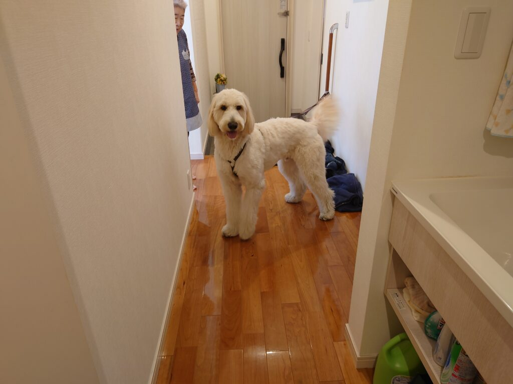
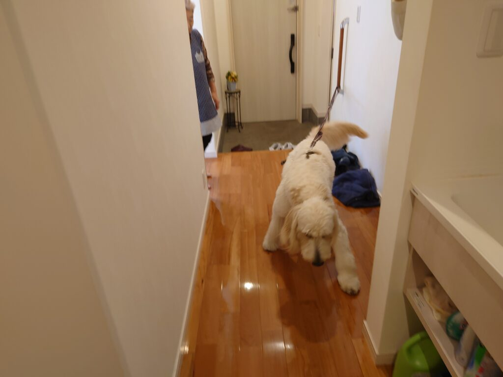
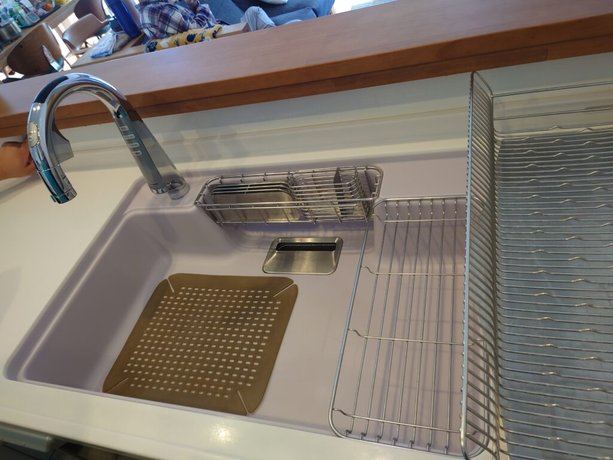
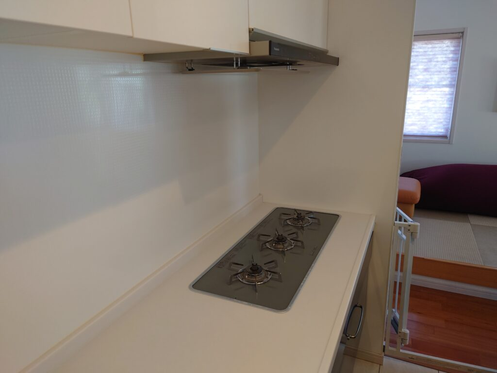
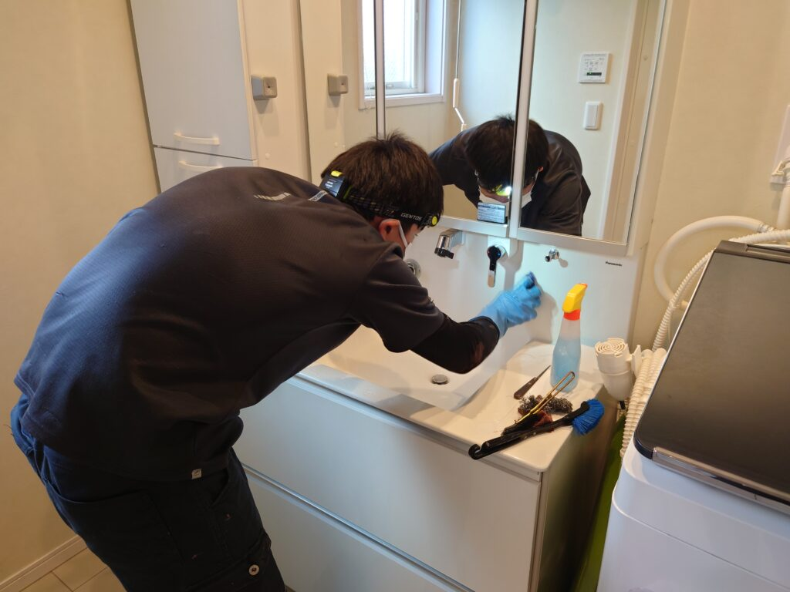
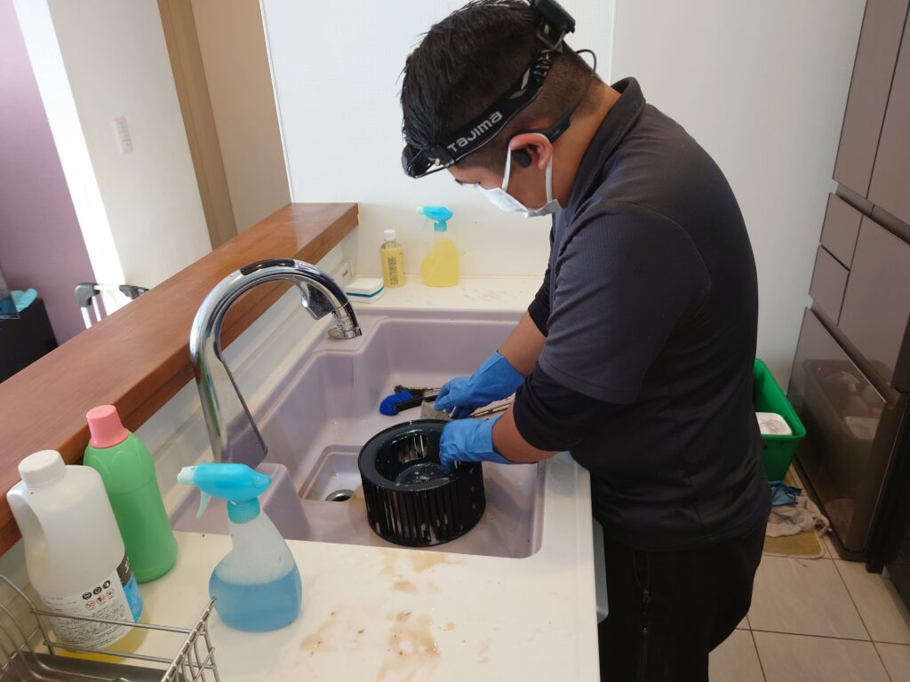
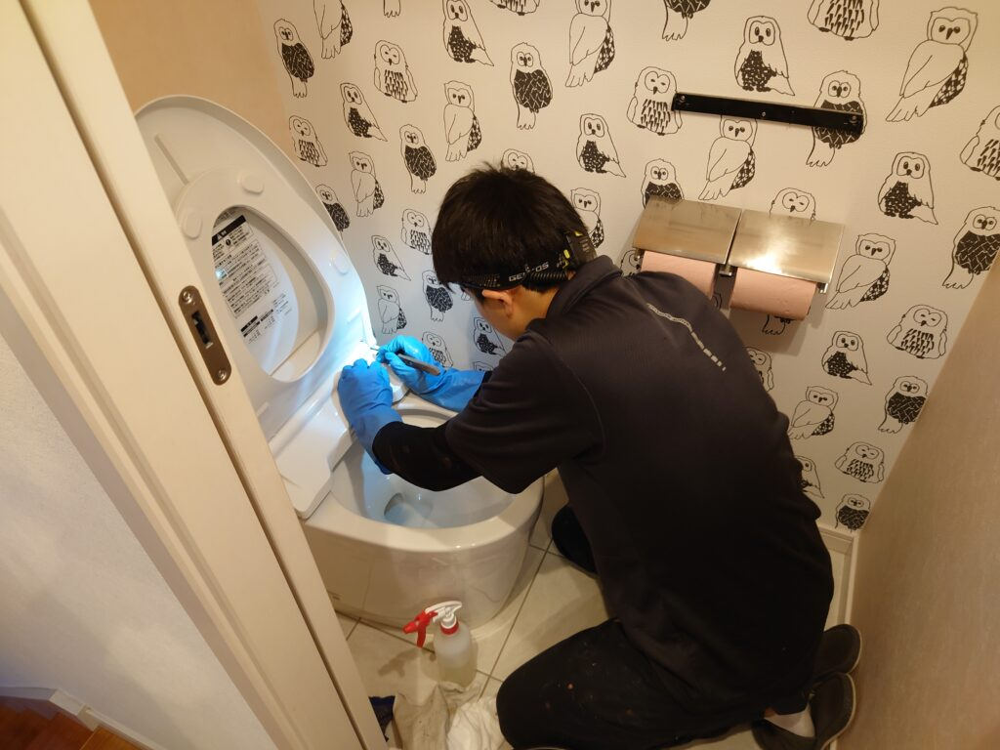
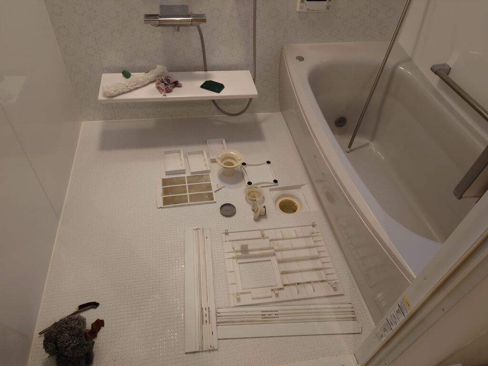
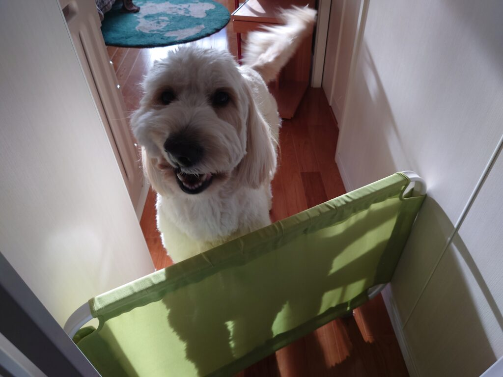

「素敵な大型ワンちゃん」のいるリピーターMさん宅の水回りプレミアムフルセットを今年も実施しました!
素敵な大型犬 テオちゃんがいるリピーター横浜Mさん宅の水回りプレミアムフルセットクリーニングを実施しました。テオちゃんは大型でとても可愛いいワンちゃんで、喜んでスキンシップさせてくれました。ワンちゃん猫ちゃんのいらっしゃるお客様のクリーニング実施が本当に多いです！クリーニング中もリードなどリリースして頂いて自由に（ワンちゃん猫ちゃんも）クリーニング作業を見学するケースが多いです！








